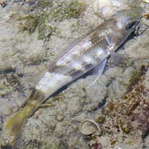
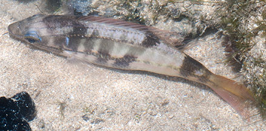

|
|
| fishes text index | photo index |
| Phylum Chordata > Subphylum Vertebrate > fishes > Family Lethrinidae |
| Spangled
emperor Lethrinus nebulosus Family Lethrinidae updated Sep 2020 Where seen? Colourful juveniles are sometimes seen on some of our shores, near seagrasses and reefs. Elsewhere, the fish is found in reefs, seagrass beds, mangroves and sandy and rocky shores. Adults are solitary or in small schools; juveniles form large schools in shallow, sheltered sandy areas, among seagrasses, algae or sponge habitats at various depths. Features: To about 70cm, those seen on the intertidal about 15cm. Like other members of the Family Lethrinidae, it has large scales in a 'distinctive pattern' -- a kind of diamond pattern. Overall body colour pale, yellowish or bronze, lighter below. Sometimes irregular dark indistinct bars on sides and a square black blotch above pectoral fin bordering below the lateral line. Three blue streaks or series of blue spots on the top of the head from the eyes. Fins whitish or yellowish; the pelvic dusky, the edge of the dorsal fin is reddish. Juveniles variable with blotches or stripes and changes with habitat. |
 Sisters Island, Jul 10 |
 Pulau Sekudu, May 12 |
| What does it eat? It eats echinoderms,
molluscs and crustaceans, and to some extent on polychaetes worms
and other fishes. Human uses: It is valued as seafood. This species can survive for long periods in salinities as low as 10 parts per thousand and therefore it is a potential estuarine aquaculture species. |
| Spangled emperors on Singapore shores |
On wildsingapore
flickr
|
| Other sightings on Singapore shores |
Links
|